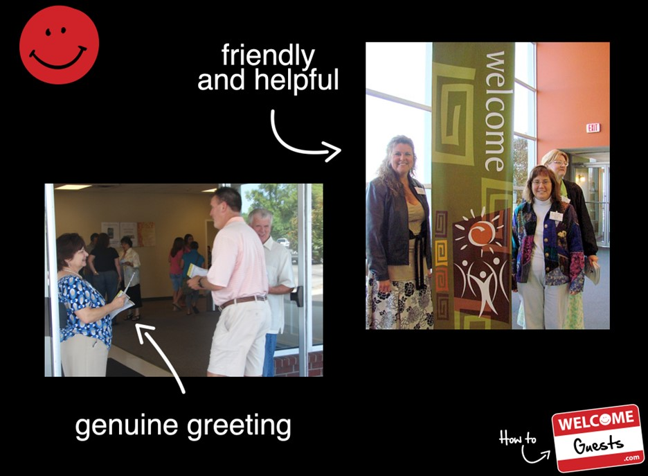

Let us come along side you to train your volunteers
Click the videolink to hear the process of what How To Welcome Guests can do for you.


Click the videolink to hear the process of what How To Welcome Guests can do for you.
Training your volunteers can help make a daunting experience more inviting for your guests. It's normal to feel apprehension when visiting a church for the first time. Let us help you walk your greeters and staff through the process of making people comfortable.
We have products to help make the process easier for you to resource your church. From information cards, to gift bags, to logo mugs and more.
 Read More...
Read More...
We would love for you to hear what other church staff and volunteers have to say about How To Welcome Guests. Com
Read More...